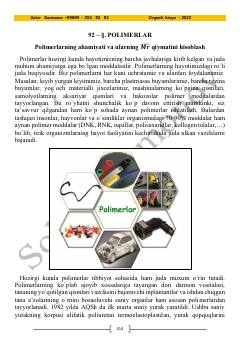

OKOrganik kimyo va polimerlar haqida nazariy hamda amaliy qoʻllanma.
Ushbu qoʻllanma organik kimyo fanining asosiy tushunchalarini, xususan polimerlar, ularning ahamiyati, turlari va xossalarini qamrab oladi. Kitobda polimerlanish darajasi va molekulyar massani hisoblashga oid nazariy maʼlumotlar hamda amaliy masalalar yechimi keltirilgan.